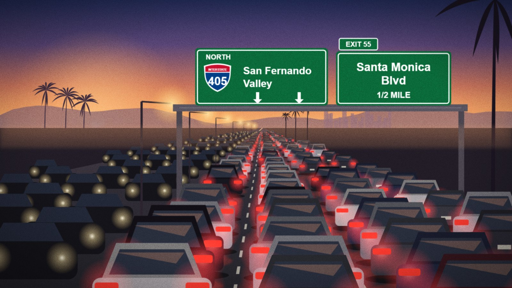

Traffic nightmare: what the easement means for your commute
A study projects peak-hour traffic increases of up to 340 percent if the resort's bypass road is never built.

If you drive the Kahana corridor at 7 AM, you already know the problem. A traffic study reviewed by the Free Press projects that peak-hour volumes could rise by as much as 340 percent if planned road improvements are never built.
"340 percent. Think about what that means for the school run, the hospital, the fire station."
The Kaimana Resort Partners project includes a bypass road that the developer has said it would build at its own expense. If Measure 7 passes and the project is blocked, the bypass goes with it.
"People vote on a pretty picture of a ridge and forget they have to drive to work on Monday," said Jenna Alcott of Neighbors for Kahana Jobs.
The study's authors did not respond to a request for comment. The county's transportation office said it had not reviewed the figures.
Reader comments (0)